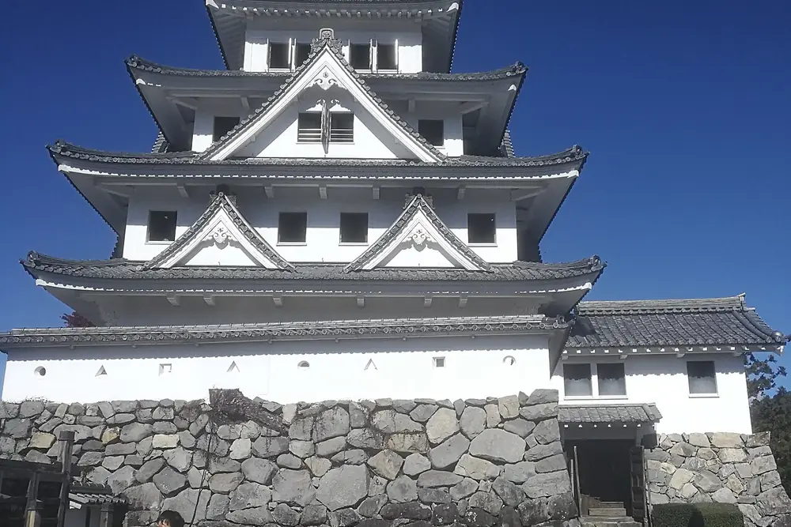
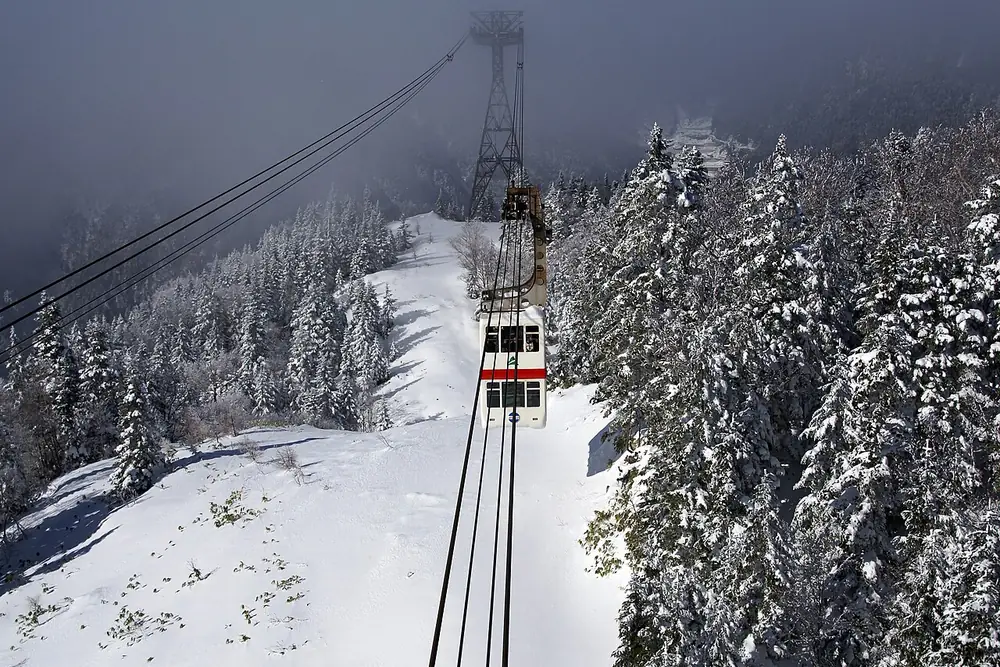
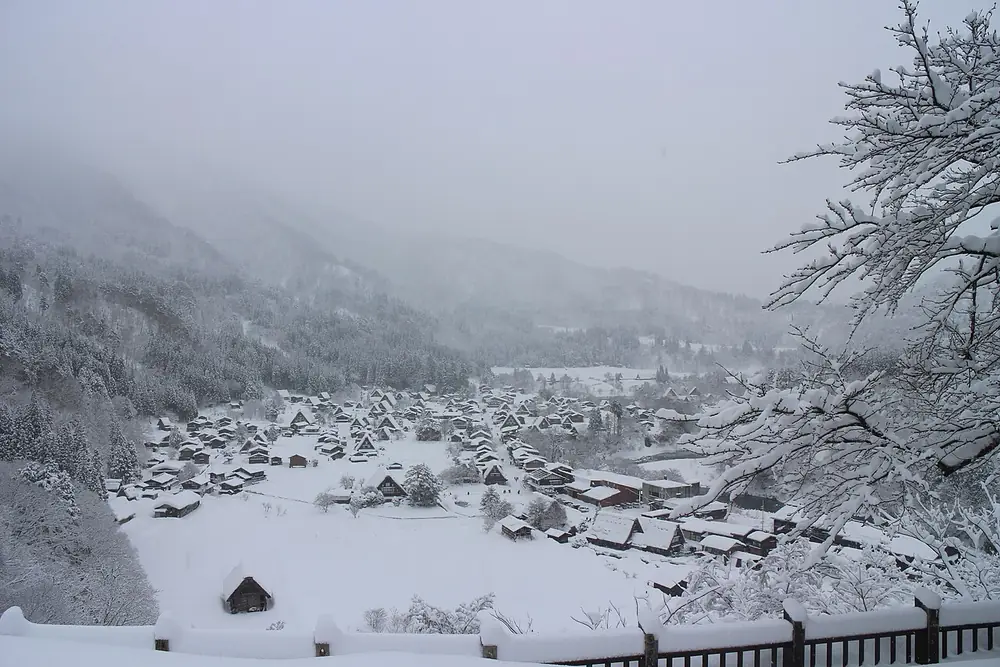
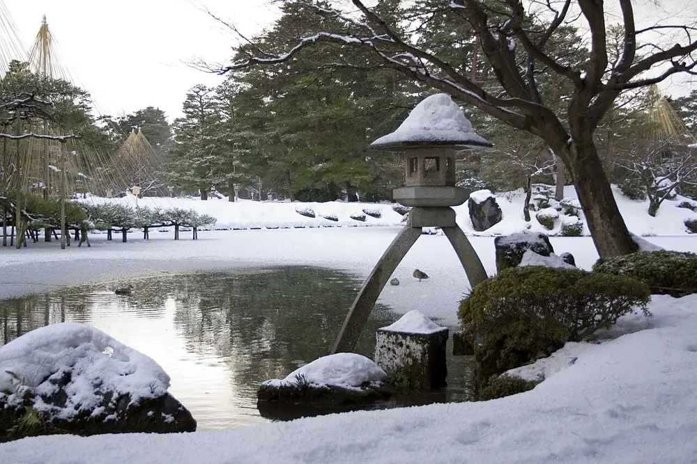
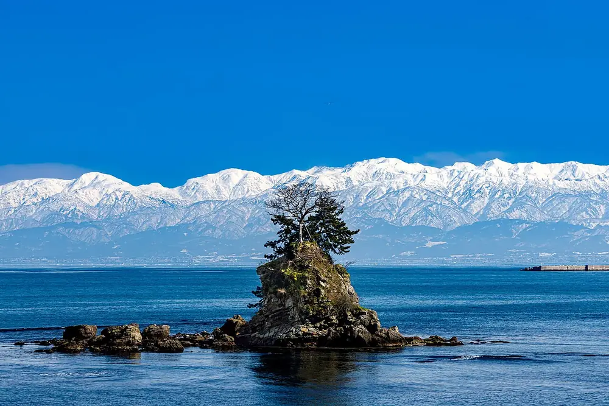
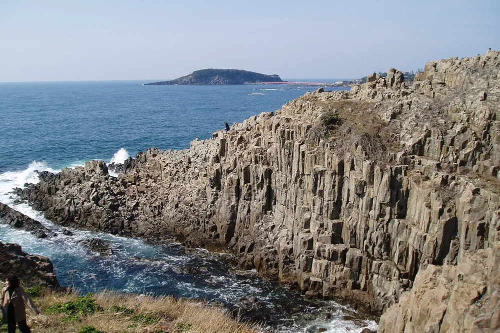
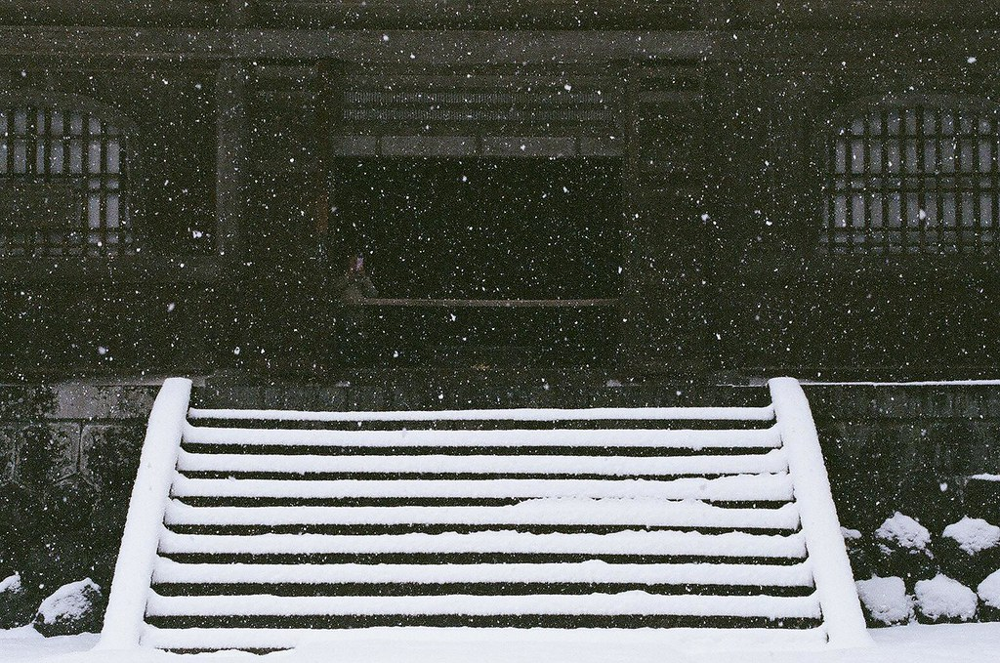
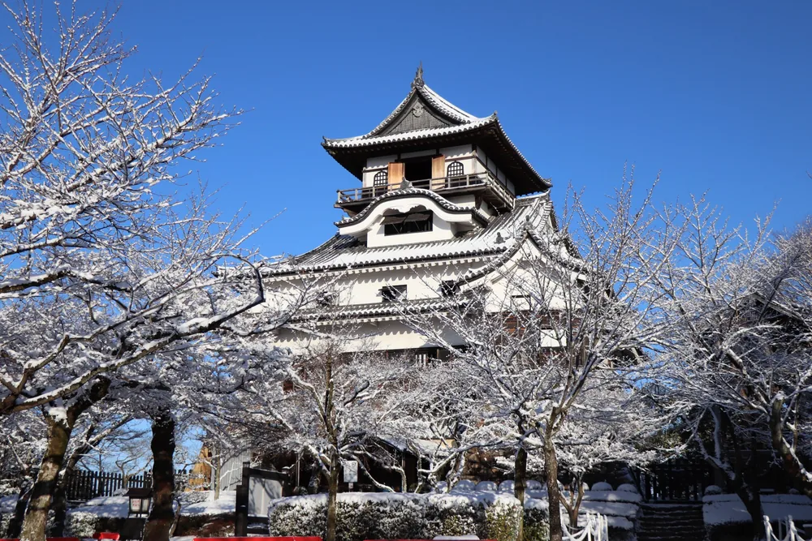

BEFORE WE GO · 行前準備
BEFORE WE GO
雪地行前準備
12月北陸 · 雪地保暖
這趟會經過下呂、新穗高、白川鄉與北陸日本海側，12月可能遇到下雪、低溫與濕滑地面。穿著以保暖、防水及好走為主。
- 防水防滑鞋或雪靴：選深紋鞋底；普通球鞋濕掉後很冷。
- 洋蔥式三層穿法：發熱衣＋保暖中層＋防風防水外套。
- 手套、毛帽、圍巾與厚襪：手套最好可觸控手機。
- 多帶一雙乾襪：鞋襪進水時可立即更換。
- 暖暖包：貼式與手握式各準備一些。
- 行動電源與充電線：低溫會讓手機耗電加快。
- 太陽眼鏡與防曬：晴天雪面反光會刺眼。
- 護唇膏、乳液與常用藥：北陸冬季冷又乾。
- 小毛巾與防水袋：收濕手套、襪子或雨傘。
出發前可查看：日本氣象廳各地天氣
路線示意 · 非比例尺
- DAY 1中部機場 → 郡上 → 下呂
- DAY 2下呂 → 新穗高 → 平湯
- DAY 3平湯 → 高山 → 白川鄉 → 金澤
- DAY 4金澤市內 · 兼六園
- DAY 5金澤 → 庄川峽 → 高岡 → 雨晴 → 金澤
- DAY 6金澤 → 東尋坊 → 永平寺 → 名古屋
DAY 3 已確定由白川鄉直接前往金澤，連住 Hotel Forza Kanazawa 三晚。
DAY 01
抵達日本，前往下呂
冬季自駕 · 雪胎必備
IT20608:45TPE 桃園 T1
12/1812:25NGO 名古屋 T2

GUJO HACHIMAN郡上八幡城
-
租車TOYOTA 租車 · 中部國際機場
W3 禁菸車，預計14:00完成手續後出發。
地圖
-
彈性停靠郡上八幡城
看點白色木造天守與山頂俯瞰的城下町全景。
若預估15:45前能抵達就前往；路況延誤則直接去下呂。
最晚入場 16:15
地圖
-
住宿下呂溫泉 望川館
抵達後辦理入住、泡湯休息。
NT$1,200／人／晚
地圖
開啟今日完整路線
DAY 02
雪山纜車與平湯溫泉
08:00–08:30 出發

SHINHOTAKA新穗高纜車
抵達・買票新穗高溫泉站
停車、整理裝備並購買纜車票。
目標搭乘 11:00 或 11:30 左右班次
地圖雪山景觀西穗高口站・頂之森
看點搭日本唯一的雙層纜車，直上2,000公尺級的北阿爾卑斯雪景。
抵達後先到展望台看景，再依體力散步頂之森。
午餐山上午餐
在西穗高口站周邊用餐，保留時間慢慢休息與賞景。
下山返回新穗高溫泉站
開始搭纜車下山，取車後前往平湯溫泉。
提早入住平湯溫泉 平田館
提早入住、泡湯休息，晚上享用溫泉旅館晚餐。
NT$2,350／人／晚
地圖
開啟今日完整路線

SHIRAKAWA-GO雪中的合掌村
-
城町散步・午餐
三町筋・高山老街
看點江戶商人町的木格子老屋，沿街可吃飛驒牛與高山小吃。
老街是主要行程；午餐與附近小景點依現場時間選擇。
附近順路有時間再選
高山陣屋歷史建築 · 江戶幕府直轄地的官署遺構。
地圖飛驒國分寺寺院 · 市區內的古寺與三重塔，適合短暫停留。
地圖
11:00 前後 · 午餐選擇二選一＋散步點心
午餐主選蕎麥
ざる蕎麦 せと
有停車場，適合進老街前先吃；可品嘗不同產地的十割蕎麥。
11:00–16:00（L.O.15:30）· 週三休午餐備選烏龍麵
新井こう平製麵所
靠近高山站，適合想快速吃完、把時間留給老街散步時選擇。
營業時間請依當日地圖公告散步點心飛驒牛握壽司
飛驒 特牛
午餐後順路吃；不能預約，熱門時段可能排隊。
10:00–17:00 · 位於上三之町
地圖
-
世界遺產
白川鄉合掌村
看點茅草合掌造聚落與雪中山村景色，感受仍在延續的生活風景。
冬季日落較早，保留時間散步與拍照。
附近順路散步途中再決定
白川鄉 布丁的家甜點 · 聚落散步途中想休息時再去。
地圖
地圖
前往金澤白川鄉 → Hotel Forza Kanazawa
不住合掌村，直接前往金澤；抵達時間依冬季路況調整。
入住・晚餐Hotel Forza Kanazawa
辦理入住後，再依抵達時間選擇晚餐。
NT$1,100／人／晚
入住後 · 晚餐選擇12/20 星期日
關東煮目前週日定休
おでん居酒屋 三幸
你提供的候選店；依目前固定公休日，12/20星期日無法安排。
出發前仍可再次確認臨時營業公告首選候選老舖金澤關東煮
菊一
目前星期日營業，但不接受訂位；晚到可能需要排隊或遇到售罄。
17:30–22:00 · 售完可能提早結束海鮮居酒屋目前週日定休
食樂 かぶ菜
你提供的候選店；依目前固定公休日，12/20星期日無法安排。
可留作其他金澤晚上備選 地圖
開啟今日完整路線

KENROKUEN兼六園冬景
自由時間金澤市區
前一晚已入住金澤，上午保留休息或市區散步。
庭園兼六園
看點冬季雪吊、徽軫燈籠與霞池，組成金澤最具代表性的庭園景色。
視天候調整停留時間。
地圖北陸海鮮金澤晚餐
今天的晚餐現場候位
晚餐迴轉壽司
金澤美味壽司 本店
直接吃北陸海鮮；本店有共用停車場。
11:00–21:30（L.O.21:00）· 不接受訂位 住宿Hotel Forza Kanazawa
飯店沒有專用停車場，使用附近付費停車場。
NT$1,100／人／晚
地圖
開啟金澤市區路線
DAY 05
庄川峽遊船，午後看海
09:00 長程航線

AMAHARASHI海岸與立山連峰
出發Hotel Forza Kanazawa → 庄川峽
直接前往小牧港，預留冬季路況與購票時間。
停車・買票庄川峽遊覽船 小牧港
抵達後停車、買票並提早候船。
地圖長程遊船大牧溫泉航線・往返
看點從水面深入冬季峽谷，沿途欣賞雪景與水庫山色。
搭原船往返；沒有大牧溫泉預約者不下船。
午餐時間高岡午餐
用餐後前往瑞龍寺。
今天的午餐接續瑞龍寺最順路
午餐洋食
洋食 no ARIKA
在新高岡站附近，用餐後接瑞龍寺與雨晴海岸。
11:00–15:00（L.O.14:30）· 週三及不定期休 國寶建築高岡山 瑞龍寺
看點山門、佛殿、法堂三座國寶，伽藍沿中軸展開、格局端正。
冬季16:00閉門，建議預留約一小時參拜。
地圖海岸雨晴海岸
看點女岩、富山灣與雪覆立山連峰同框，是今日的主拍照點。
導航至「道之驛 雨晴」；山景需看天候。
地圖彈性停靠海王丸公園
看點白色帆船、富山灣、新湊大橋與立山連峰的港灣全景。
以天候與日落時間決定是否前往，不影響返回金澤。
地圖晚餐金澤關東煮
今天的晚餐熱門時段可能排隊
晚餐金澤關東煮
おでん居酒屋 三幸
返回金澤後前往，建議早一點到。
16:00–22:00 · 日、國定假日及第二個週一休 住宿Hotel Forza Kanazawa
NT$1,100／人／晚
地圖

TOJINBO東尋坊

EIHEIJI大本山永平寺
早餐金澤出發前
今天的早餐吃完順勢往福井
早餐咖啡・早午餐
むさしの森珈琲 金澤入江店
07:00開始營業，適合退房後先吃早餐。
07:00–22:00 出發Hotel Forza Kanazawa
退房後沿北陸自動車道前往福井。
海蝕地形東尋坊
看點綿延約1公里的柱狀節理斷崖，近看日本海浪拍岩壁。
冬季海風強，注意腳下；星期三遊覽船停駛。
地圖禪寺大本山 永平寺
看點杉林中的曹洞宗修行道場，七堂伽藍與長廊氣氛莊嚴。
預留約90分鐘參拜。
地圖住宿Nagoya Stay
先放行李，再前往租車門市。
NT$1,500／人／晚
還車TOYOTA 租車 · 名古屋新幹線口
還車完成後，後續行程改搭大眾運輸。
地圖
開啟今日完整路線

INUYAMA國寶犬山城
早餐候選名古屋早餐
出發前早餐也可改到 12/25
早餐候選吐司
つばめパン＆Milk 尼ケ坂本店
需要特地前往尼ケ坂，再回到名古屋站轉車。
Morning 08:00–11:00 · 年末年始休 出發Nagoya Stay → 犬山遊園站
經名古屋站轉乘名鐵犬山線。
日本庭園有樂苑
看點國寶茶室「如庵」與清幽苔庭，適合放慢腳步看茶庭細節。
從犬山遊園站步行前往。
地圖國寶犬山城
看點登上現存木造天守，從最上層迴廊眺望木曾川與城下町。
天守樓梯陡峭，穿著方便行走的鞋子。
地圖午餐・散步三光稻荷神社與犬山城下町
看點紅色鳥居、心形繪馬，再接老町屋與五平餅等沿路小吃。
一路散步至犬山站，再搭車返回名古屋。
回程點心名古屋站附近
回程順手買每日數量有限
點心候選泡芙
Chou de kacha
名古屋站步行約3分鐘，適合回程途中外帶。
11:00–18:00 · 週一、週二休 住宿Nagoya Stay
NT$1,500／人／晚
開啟大眾運輸路線
余白這一天，先留給旅途中的靈感。
主行程暫不安排；用餐也保留彈性，當天再選。
當天再選名古屋用餐候選
依當天活動地點與想吃的口味決定，不預先綁定時間。
用餐時再選三選一
午餐・晚餐低溫炸豬排
カツレツ MATUMURA
位於大名古屋大樓，適合名古屋站周邊行程；可先預約減少等候。
11:00–22:00 · 全年無休鰻魚飯榮・伏見
鰻櫃 花岡
想在榮、伏見一帶活動時選這間。
營業時間請依當日地圖公告鰻魚飯名古屋站
ひつまぶし 名古屋 備長
大名古屋大樓店最方便，名古屋站直結且可預約。
11:00–15:00、17:00–22:00
IT20713:15NGO 名古屋 T2
12/2615:50TPE 桃園 T1
帰路上午行程暫不安排。
之後再補上離開住宿與前往機場的時間。
目前八晚住宿皆已確認；12/20起在 Hotel Forza Kanazawa 連住三晚。
12/20Hotel ForzaNT$1,100地圖
12/21Hotel ForzaNT$1,100地圖
12/22Hotel ForzaNT$1,100地圖
目前八晚合計NT$11,350每人住宿費 · 依目前已提供金額計算
金澤12/20～12/22 連住 Hotel Forza Kanazawa，三晚合計 NT$3,300／人。